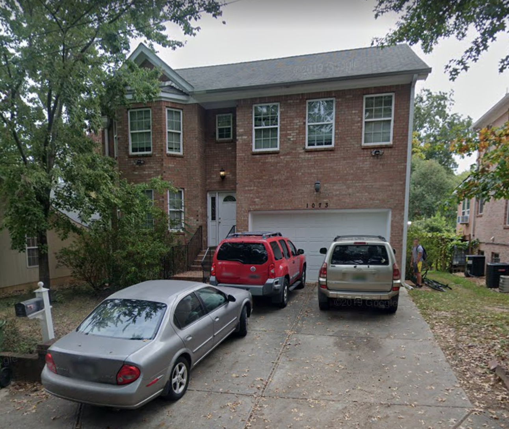
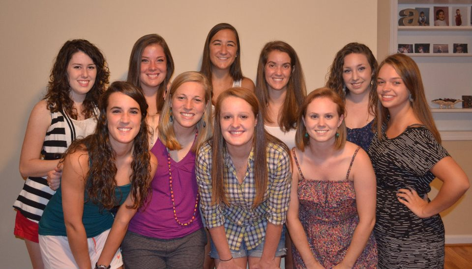
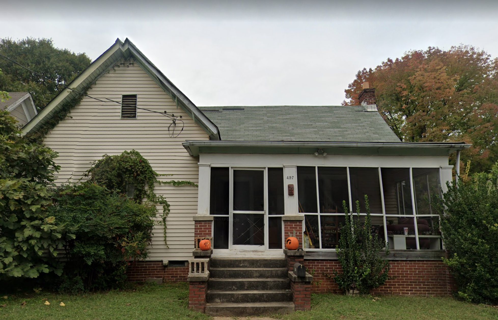
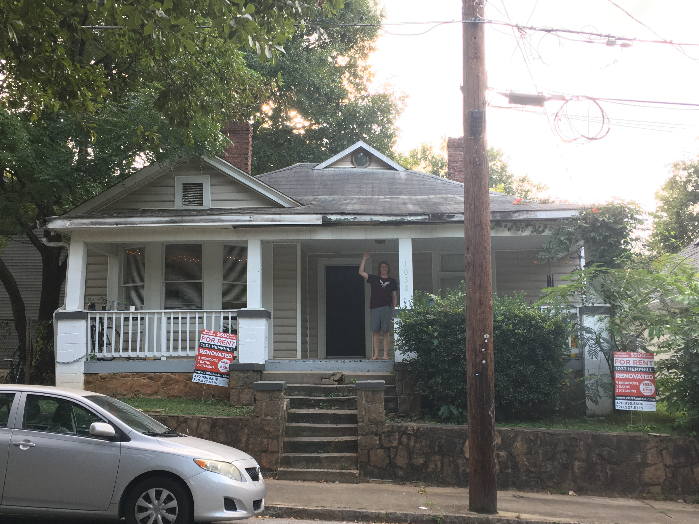
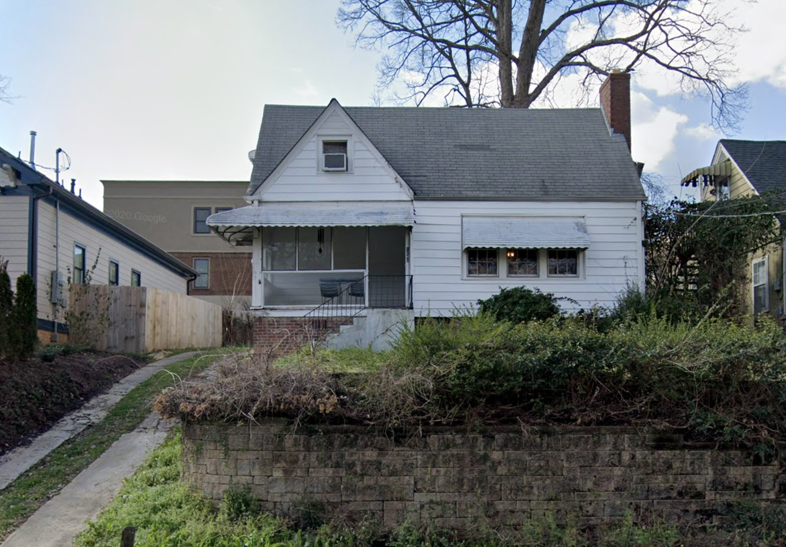

"There is no place close to campus other than home park where I could live off the amount of money I make as a college student. Low prices for rent mean I can afford to spend more time on my schoolwork instead of working to try to afford my meager college lifestyle." – Anthony Limiero, Aeronautical Space engineer
“A group of friends and I moved into a house together in 2011 and stayed there for 2 full years. Transitioning from on-campus to off-campus housing marked a big change in my college experience and transition into adulthood. Suddenly we were able to host friends at our home more effectively and our sense of community greatly increased. We were also saving lots of money that we could use for more experiences around the great city of Atlanta! Our home, affectionately called Barbie Mansion, became a meeting place for all our friends. We hosted movie nights and birthday parties and dinner parties and that led to deepening friendships all around. It has now been almost 10 years since I lived in Barbie Mansion and I still look back on those two years as some of the best of my life!” – Emily Abernathy, Econ/INTA and Management graduate of 2013

I love the independence of being off campus along with the ability to host people and cook for myself. My front porch was also a life saver during quarantine -Katie Carlson, Computational Media student

"I can afford to live at college mainly because I have had at least one source of steady income the whole time I’ve been in school. My parents have also been generous enough to help subsidize a little bit each month to keep me afloat. Living at the Cauldron afforded be the best rent option I could find per square foot for my room, while at the same time being a house that efficiently used each space it has." - Jack Purdy, GT business student

“I’m currently just looking around at apartments, for when my lease is done, trying to figure some stuff out because if I’m being honest, I just don’t want to have to deal with a landlord again. I’m really not sure if the apartment thing will work out and am interested in considering another Home Park house once my roommates move out.” – member of the Jungle